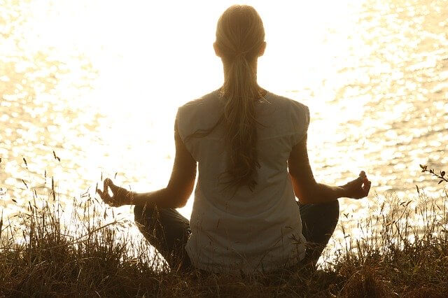

靜坐是什麼？
靜坐，又稱冥想 集身心靈於一身的靜態運動 現今社會大多數人穿梭在各種現實壓力中，家庭、工作各種難題中，常常因為各種煩惱，而變得煩躁或是情緒不穩導致低落負面，當面臨這些情況無法去解決時，靜坐即是非常好的選擇 透過一天短暫的20-30分鐘，給自己一個心靈沈澱的時間，也透過靜坐來檢視自己檢視生活
靜坐的好處與優點
1.靜坐能夠減少壓力荷爾蒙
靜坐的好處其實非常非常多，有很多的科學文獻都可以證實他能夠減少壓力荷爾蒙
2.靜坐可以幫助睡眠
這也是我一開始會想要靜坐的原因之一，因為我看到有研究說靜坐久了的人會有更多的Gamma波，就是我們深層睡眠時會發出來的波
雖然我還沒有達到那個境界，但是我靜坐兩個禮拜之後就有感受到睡眠改善，在開始靜坐之前我睡覺時總是會想一堆有的沒的就睡不著，但靜坐之後我心情會平穩很多很容易入睡，那其實大家也知道睡眠對於身材是很有影響的
所以如果你睡不著、睡不夠深可以試試看
3.靜坐可以改善情緒，減少焦慮、煩躁感
其實研究最常做的領域是靜坐對心情上的幫助，而大部分的研究也都顯示出靜坐可以減少焦慮、壓力、煩躁、憂鬱，很多人會因為以上這些低落的心情，而去爆吃垃圾食物想要讓心情變得更好
所以我想如果靜坐能改善的話，也許我們可以不再靠吃食物來滿足心情，而是靠找到心中的平靜來滿足自己

靜坐之後帶來的改變
進行了靜坐一段時間後，我不再容易感到煩躁焦慮，每當遇到事情時懂得先穩下心，把心情處理好再處理事情 對於思考事情的方向也不會困在一個死胡同裡，會以比較正向多角度的方向去想事情。 過去當自己做錯被指責或是有人不同意我的意見的時候，還是會直接產生反感的心情，盡力找理由捍衛自己的論點 這其實是很正常的現象，因為人都是有防衛心、不喜歡被攻擊的 但是到晚上靜坐的時候重新思考這個點，就可以放下那煩躁、反感的思想，試著去理解為什麼別人會提出這樣的建議 靜坐久了之後真的會習慣，遇到恐懼、慾望、厭惡的時候先靜下來，這樣的習慣讓我減少很多跟別人的爭執 也多聽了很多別人提出的優秀建議，這對於我們團隊以及我個人的成長是很重要的 現在我可以很直接的跟大家說 有發生任何的事情都可以跟我討論 如果我有做不好的需要改進的也請跟我說
總結
靜坐本身不是什麼神奇的魔術，只是現代人真的太煩忙於外在的事物，而缺少了專注在自己心中的時間 透過每天短暫且有意義的平靜，就可以帶給你身體且心靈上的幫助 而且是免費的 真的是CP值很高 就直接給他推薦下去